2 + 3 # 덧셈#> [1] 52 - 3 # 뺄셈#> [1] -12 * 3 # 곱셈#> [1] 62 / 3 # 나눗셈#> [1] 0.66666672^3 # 거듭제곱#> [1] 82**3 # 2^3과 동일#> [1] 8이 실습에서는 몇 가지 기본적인 R 명령을 소개한다. 새로운 프로그래밍 언어를 배우는 가장 좋은 방법은 명령을 직접 실행해 보는 것이다. R은 다음 사이트에서 내려받을 수 있다.
R은 RStudio와 같은 통합개발환경(IDE)에서 실행하는 것을 권장한다. RStudio는 다음 사이트에서 무료로 내려받을 수 있다.
https://posit.co/download/rstudio-desktop/
Posit 웹사이트에서는 별도의 소프트웨어 설치 없이 사용할 수 있는 클라우드 기반의 R 환경도 제공한다.
R을 시작하면 R 콘솔이 열린다. 명령 프롬프트는 > 기호이며, 사용자는 이 프롬프트에 명령을 입력하여 R과 상호작용한다.
R 코드 작성과 실행 중 자주 발생하는 문제는 Hadley Wickham과 Garrett Grolemund의 R for Data Science에 수록된 “Common problems” 절을 참고할 수 있다.
예를 들어 콘솔에 2 + 2를 입력하고 Enter 키를 누르면 R은 명령을 즉시 해석하고 실행하여 값 4를 출력한 뒤 새로운 명령 프롬프트를 표시한다.
R 언어는 일반적인 산술연산자를 제공한다.
+: 덧셈-: 뺄셈*: 곱셈/: 나눗셈^ 또는 **: 거듭제곱2 + 3 # 덧셈#> [1] 52 - 3 # 뺄셈#> [1] -12 * 3 # 곱셈#> [1] 62 / 3 # 나눗셈#> [1] 0.66666672^3 # 거듭제곱#> [1] 82**3 # 2^3과 동일#> [1] 84^2 - 3^2#> [1] 71 - 6 + 4#> [1] -1(4^2) - (3*2) # 4^2 - 3*2와 동일#> [1] 10(4 + 3)^2 # 4^2 + 3^2과는 다름#> [1] 492--3#> [1] 52 - -3 # 2--3과 동일하지만 의미가 더 분명함#> [1] 5log(100) # 자연로그#> [1] 4.60517log10(100) # 밑이 10인 로그#> [1] 2log(100, base = 10) # 밑이 10인 로그#> [1] 2log(100, base = 2) # 밑이 2인 로그#> [1] 6.643856help(log) # 도움말: ?log와 동일
example("log") # log 사용 예제#>
#> log> log(exp(3))
#> [1] 3
#>
#> log> log10(1e7) # = 7
#> [1] 7
#>
#> log> x <- 10^-(1+2*1:9)
#>
#> log> cbind(deparse.level=2, # to get nice column names
#> log+ x, log(1+x), log1p(x), exp(x)-1, expm1(x))
#> x log(1 + x) log1p(x) exp(x) - 1 expm1(x)
#> [1,] 1e-03 9.995003e-04 9.995003e-04 1.000500e-03 1.000500e-03
#> [2,] 1e-05 9.999950e-06 9.999950e-06 1.000005e-05 1.000005e-05
#> [3,] 1e-07 1.000000e-07 1.000000e-07 1.000000e-07 1.000000e-07
#> [4,] 1e-09 1.000000e-09 1.000000e-09 1.000000e-09 1.000000e-09
#> [5,] 1e-11 1.000000e-11 1.000000e-11 1.000000e-11 1.000000e-11
#> [6,] 1e-13 9.992007e-14 1.000000e-13 9.992007e-14 1.000000e-13
#> [7,] 1e-15 1.110223e-15 1.000000e-15 1.110223e-15 1.000000e-15
#> [8,] 1e-17 0.000000e+00 1.000000e-17 0.000000e+00 1.000000e-17
#> [9,] 1e-19 0.000000e+00 1.000000e-19 0.000000e+00 1.000000e-19args(log) # log 함수의 인수 확인#> function (x, base = exp(1))
#> NULLlog(100, 10) # 인수명을 생략하면 위치에 따라 인수가 대응됨#> [1] 2R은 다양한 연산을 수행하기 위해 함수(function)를 사용한다. funcname이라는 함수를 실행하려면 funcname(input1, input2)와 같이 입력한다. 여기서 input1과 input2는 함수가 어떻게 작동할지를 지정하는 입력 또는 인수(argument)이다. 함수는 필요한 수만큼 인수를 가질 수 있다.
숫자 벡터를 만들 때는 c() 함수를 사용한다. c는 concatenate, 즉 여러 값을 연결한다는 뜻이다. 괄호 안의 값들은 하나의 벡터로 결합된다. 다음 명령은 1, 3, 2, 5를 연결하여 x라는 이름의 벡터에 저장한다. 이후 x를 입력하면 벡터의 값이 출력된다.
x <- c(1, 3, 2, 5)
x#> [1] 1 3 2 5콘솔의 >는 명령의 일부가 아니라 R이 다음 명령을 받을 준비가 되었음을 나타내는 표시이다. 객체를 저장할 때 <- 대신 =를 사용할 수도 있다.
x = c(1, 6, 2)
x#> [1] 1 6 2y = c(1, 4, 3)위쪽 화살표 키를 여러 번 누르면 이전에 실행한 명령을 불러와 수정할 수 있다. 비슷한 명령을 반복해서 실행할 때 유용하다. 또한 ?funcname을 입력하면 funcname() 함수에 관한 도움말 창이 열린다.
두 숫자 벡터를 더하면 R은 x의 첫 번째 원소와 y의 첫 번째 원소를 더하고, 같은 방식으로 각 위치의 원소를 더한다. 이때 x와 y의 길이가 같아야 한다. 벡터의 길이는 length() 함수로 확인할 수 있다.
length(x)#> [1] 3length(y)#> [1] 3x + y#> [1] 2 10 5ls() 함수는 현재까지 저장한 데이터, 함수 등 모든 객체의 목록을 보여준다. 필요하지 않은 객체는 rm() 함수로 삭제할 수 있다.
ls()#> [1] "x" "y"rm(x, y)
ls()#> character(0)모든 객체를 한 번에 삭제할 수도 있다.
rm(list = ls())matrix() 함수는 숫자 행렬을 생성한다. 함수를 사용하기 전에 도움말을 확인할 수 있다.
?matrix도움말을 보면 matrix() 함수가 여러 인수를 받는다는 것을 알 수 있다. 여기서는 처음 세 인수인 데이터, 행의 수, 열의 수에 주목한다. 먼저 간단한 행렬을 생성해 보자.
x <- matrix(data = c(1, 2, 3, 4), nrow = 2, ncol = 2)
x#> [,1] [,2]
#> [1,] 1 3
#> [2,] 2 4위 명령에서 data=, nrow=, ncol=을 생략하고 다음과 같이 입력해도 결과는 같다.
x <- matrix(c(1, 2, 3, 4), 2, 2)하지만 함수에 전달하는 인수의 이름을 명시하면 코드의 의미를 더 쉽게 이해할 수 있다. 인수명을 생략하면 R은 도움말에 정의된 인수 순서에 따라 값을 대응시킨다. 기본적으로 R은 열을 차례로 채워 행렬을 만든다. byrow = TRUE 옵션을 사용하면 행 단위로 값을 채울 수 있다.
matrix(c(1, 2, 3, 4), 2, 2, byrow = TRUE)#> [,1] [,2]
#> [1,] 1 2
#> [2,] 3 4위 명령에서는 행렬을 x와 같은 객체에 할당하지 않았다. 이 경우 행렬은 화면에 출력되지만 이후 계산을 위해 저장되지는 않는다.
sqrt() 함수는 벡터나 행렬의 각 원소에 대해 제곱근을 계산한다. x^2는 x의 각 원소를 제곱한다. 분수 또는 음수 지수를 포함한 다른 거듭제곱도 사용할 수 있다.
sqrt(x)#> [,1] [,2]
#> [1,] 1.000000 1.732051
#> [2,] 1.414214 2.000000x^2#> [,1] [,2]
#> [1,] 1 9
#> [2,] 4 16rnorm() 함수는 정규분포를 따르는 난수 벡터를 생성한다. 첫 번째 인수 n은 표본크기이다. 함수를 실행할 때마다 일반적으로 서로 다른 난수가 생성된다. 다음 예제에서는 서로 상관된 두 숫자 집합 x와 y를 만들고 cor() 함수로 상관계수를 계산한다.
x <- rnorm(50)
y <- x + rnorm(50, mean = 50, sd = .1)
cor(x, y)#> [1] 0.9918803기본적으로 rnorm()은 평균이 0이고 표준편차가 1인 표준정규분포 난수를 생성한다. 위 예제처럼 mean과 sd 인수를 사용하여 평균과 표준편차를 바꿀 수 있다. 동일한 난수를 재현해야 할 때는 set.seed() 함수를 사용한다. set.seed()에는 임의의 정수를 입력한다.
set.seed(1303)
rnorm(50)#> [1] -1.1439763145 1.3421293656 2.1853904757 0.5363925179 0.0631929665
#> [6] 0.5022344825 -0.0004167247 0.5658198405 -0.5725226890 -1.1102250073
#> [11] -0.0486871234 -0.6956562176 0.8289174803 0.2066528551 -0.2356745091
#> [16] -0.5563104914 -0.3647543571 0.8623550343 -0.6307715354 0.3136021252
#> [21] -0.9314953177 0.8238676185 0.5233707021 0.7069214120 0.4202043256
#> [26] -0.2690521547 -1.5103172999 -0.6902124766 -0.1434719524 -1.0135274099
#> [31] 1.5732737361 0.0127465055 0.8726470499 0.4220661905 -0.0188157917
#> [36] 2.6157489689 -0.6931401748 -0.2663217810 -0.7206364412 1.3677342065
#> [41] 0.2640073322 0.6321868074 -1.3306509858 0.0268888182 1.0406363208
#> [46] 1.3120237985 -0.0300020767 -0.2500257125 0.0234144857 1.6598706557이 책의 실습에서는 난수가 포함된 계산을 수행할 때 set.seed()를 사용한다. 이를 통해 독자가 같은 결과를 재현할 수 있다. 다만 R 버전이 달라지면 출력에 작은 차이가 생길 수 있다.
mean()과 var() 함수는 숫자 벡터의 평균과 분산을 계산한다. var()의 결과에 sqrt()를 적용하면 표준편차가 된다. 표준편차는 sd() 함수로 바로 계산할 수도 있다.
set.seed(3)
y <- rnorm(100)
mean(y)#> [1] 0.01103557var(y)#> [1] 0.7328675sqrt(var(y))#> [1] 0.8560768sd(y)#> [1] 0.8560768plot() 함수는 R에서 데이터를 시각화하는 기본 함수이다. 예를 들어 plot(x, y)는 x와 y의 산점도를 생성한다. plot()에는 그래프를 조정하기 위한 여러 옵션이 있다. xlab 인수는 \(x\)축의 이름을 지정한다. 자세한 내용은 ?plot을 입력하여 확인할 수 있다.
x <- rnorm(100)
y <- rnorm(100)
plot(x, y)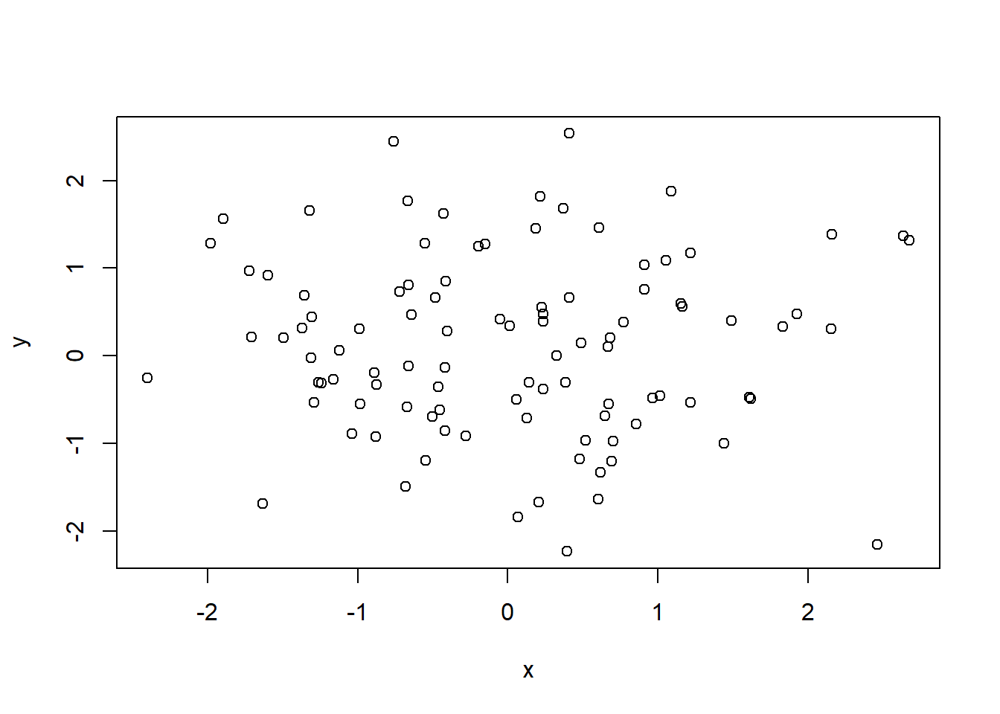
plot(x, y, xlab = "x축",
ylab = "y축",
main = "X와 Y의 산점도")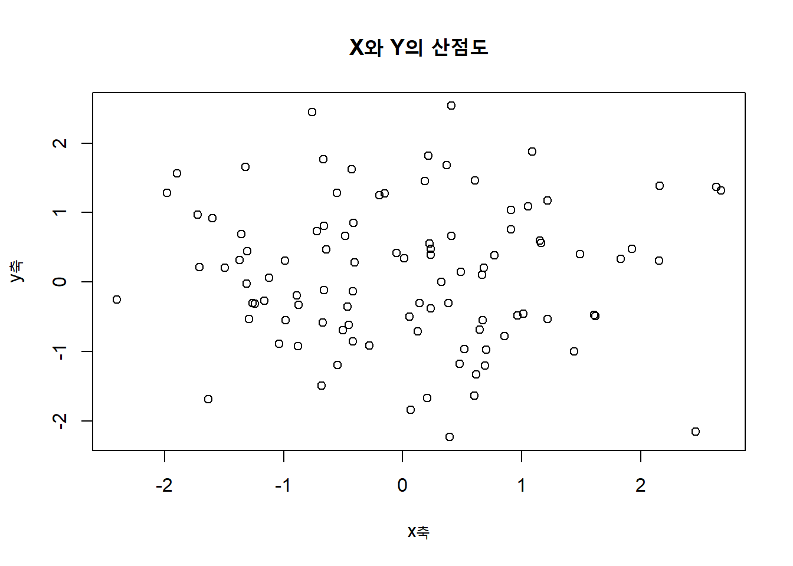
R에서 생성한 그래프를 파일로 저장할 수 있다. 사용하는 명령은 저장할 파일 형식에 따라 달라진다. PDF 파일은 pdf(), JPEG 파일은 jpeg() 함수를 사용한다.
pdf("Figure.pdf")
plot(x, y, col = "green")
dev.off()#> png
#> 2dev.off() 함수는 그래프 파일 생성을 마쳤다는 것을 R에 알린다. 또는 그래프 창의 내용을 복사하여 Word 문서와 같은 파일에 붙여 넣을 수도 있다.
seq() 함수는 수열을 생성한다. 예를 들어 seq(a, b)는 a부터 b까지의 정수 벡터를 만든다. seq(0, 1, length = 10)은 0과 1 사이를 같은 간격으로 나눈 10개의 수를 생성한다. 정수 범위에서는 3:11이 seq(3, 11)의 축약형이다.
x <- seq(1, 10)
x#> [1] 1 2 3 4 5 6 7 8 9 10x <- 1:10
x#> [1] 1 2 3 4 5 6 7 8 9 10x <- seq(-pi, pi, length = 50)이제 조금 더 복잡한 그래프를 만들어 보자. contour() 함수는 3차원 자료를 지형도와 같은 등고선으로 표현한다. 이 함수에는 다음 세 가지 핵심 인수가 필요하다.
x 값의 벡터y 값의 벡터(x,y) 좌표쌍에서 세 번째 차원인 z 값을 담은 행렬plot()과 마찬가지로 contour()에도 출력 형태를 조정하는 여러 인수를 사용할 수 있다. 자세한 내용은 ?contour에서 확인한다.
y <- x
f <- outer(x, y, function(x, y) cos(y) / (1 + x^2))
contour(x, y, f)
contour(x, y, f, nlevels = 45, add = TRUE)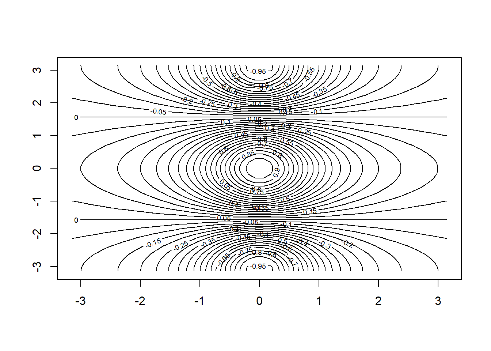
fa <- (f - t(f)) / 2
contour(x, y, fa, nlevels = 15)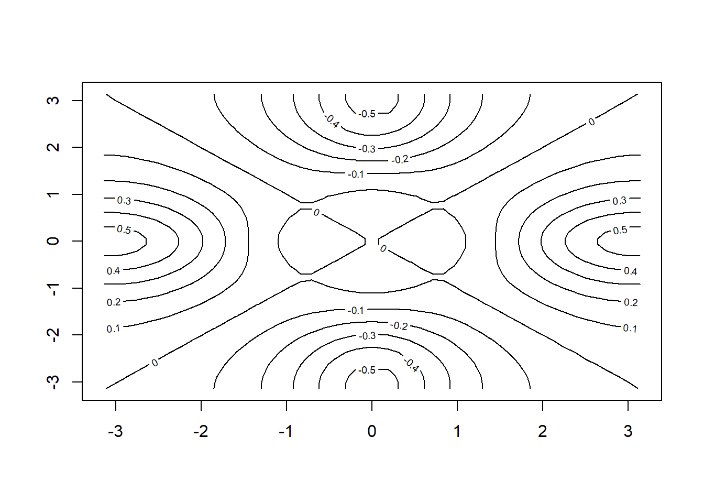
image() 함수는 contour()와 비슷하지만 z 값에 따라 색을 지정한 그림을 만든다. 이러한 그림은 열지도(heatmap)라고 하며 일기예보에서 온도를 표현할 때도 사용된다. persp()는 3차원 그래프를 만든다. theta와 phi 인수는 그래프를 바라보는 각도를 조절한다.
image(x, y, fa)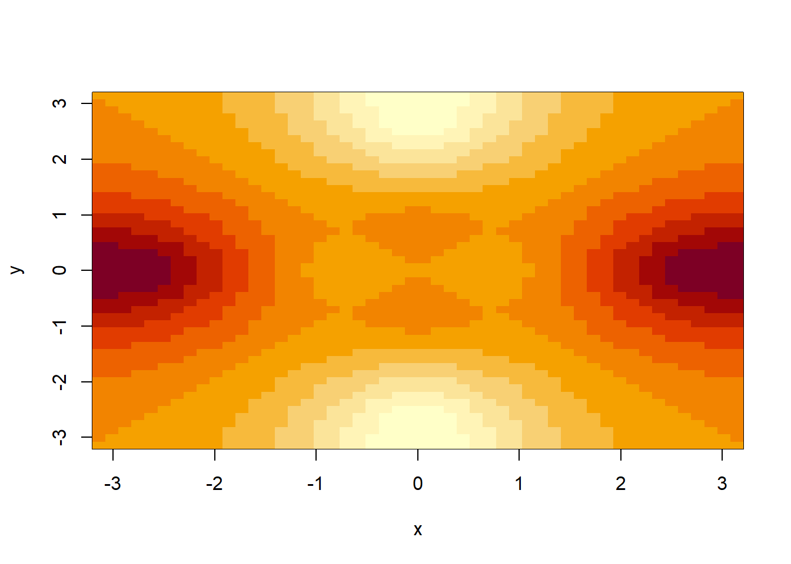
persp(x, y, fa)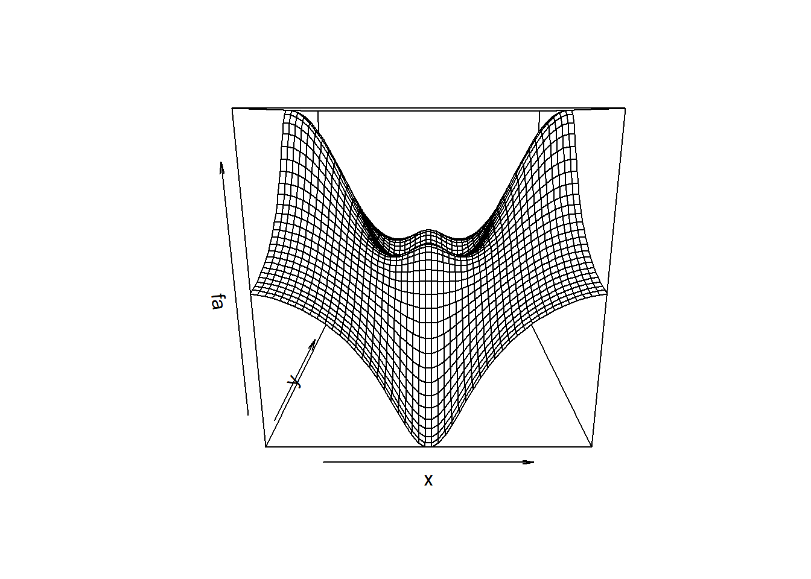
persp(x, y, fa, theta = 30)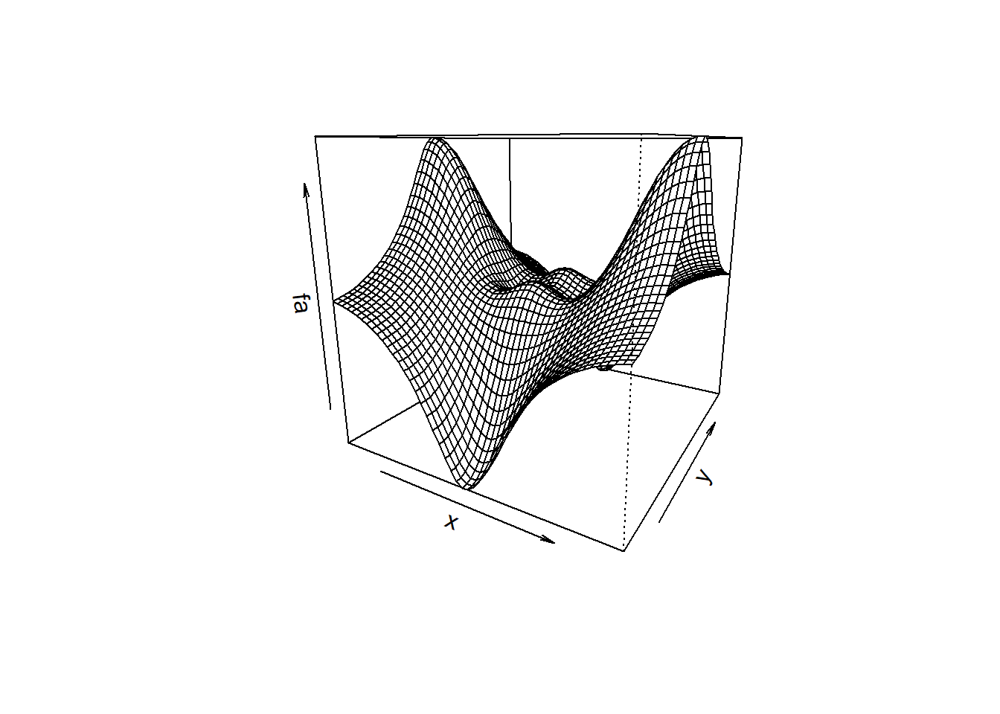
persp(x, y, fa, theta = 30, phi = 20)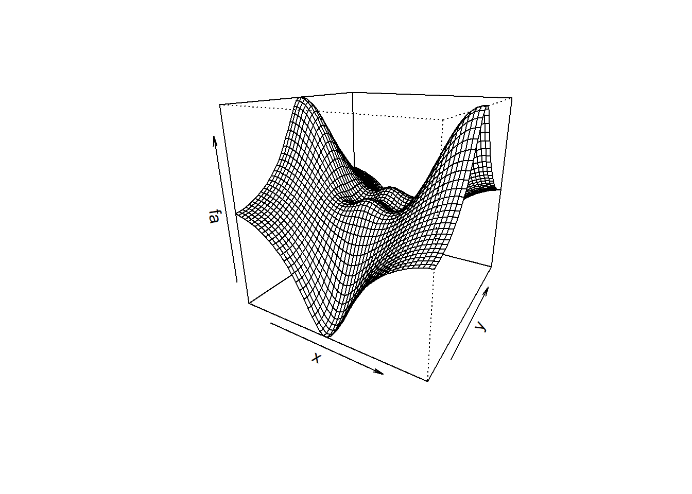
persp(x, y, fa, theta = 30, phi = 70)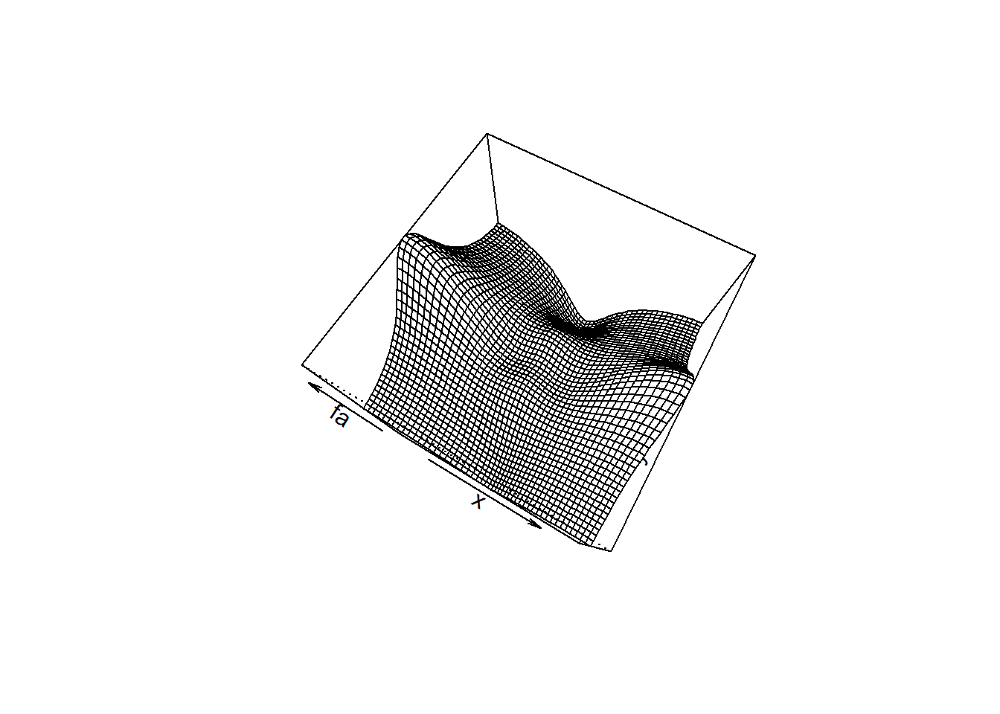
persp(x, y, fa, theta = 30, phi = 40)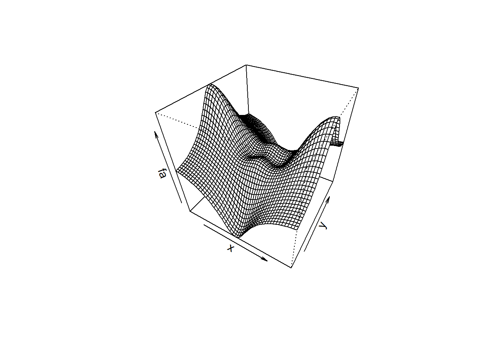
데이터의 일부만 선택하여 살펴보는 경우가 많다. 자료가 행렬 A에 저장되어 있다고 하자.
A <- matrix(1:16, 4, 4)
A#> [,1] [,2] [,3] [,4]
#> [1,] 1 5 9 13
#> [2,] 2 6 10 14
#> [3,] 3 7 11 15
#> [4,] 4 8 12 16다음 명령은 두 번째 행과 세 번째 열에 해당하는 원소를 선택한다.
A[2, 3]#> [1] 10대괄호 [ 안의 첫 번째 숫자는 행, 두 번째 숫자는 열을 의미한다. 인덱스에 벡터를 사용하면 여러 행과 열을 동시에 선택할 수 있다.
A[c(1, 3), c(2, 4)]#> [,1] [,2]
#> [1,] 5 13
#> [2,] 7 15A[1:3, 2:4]#> [,1] [,2] [,3]
#> [1,] 5 9 13
#> [2,] 6 10 14
#> [3,] 7 11 15A[1:2, ]#> [,1] [,2] [,3] [,4]
#> [1,] 1 5 9 13
#> [2,] 2 6 10 14A[, 1:2]#> [,1] [,2]
#> [1,] 1 5
#> [2,] 2 6
#> [3,] 3 7
#> [4,] 4 8마지막 두 명령처럼 열 또는 행 인덱스를 비워 두면 각각 모든 열 또는 모든 행을 선택한다. 행렬의 한 행이나 한 열만 선택하면 R은 그 결과를 벡터로 처리한다.
A[1, ]#> [1] 1 5 9 13인덱스에 음수 기호 -를 사용하면 지정한 행이나 열을 제외한 나머지를 선택한다.
A[-c(1, 3), ]#> [,1] [,2] [,3] [,4]
#> [1,] 2 6 10 14
#> [2,] 4 8 12 16A[-c(1, 3), -c(1, 3, 4)]#> [1] 6 8dim() 함수는 행렬의 행 수와 열 수를 순서대로 반환한다.
dim(A)#> [1] 4 4대부분의 분석에서 첫 단계는 데이터셋을 R로 불러오는 것이다. read.table()은 텍스트 자료를 불러오는 대표적인 함수이다. 자세한 사용법은 도움말에서 확인할 수 있다. 반대로 write.table() 함수는 자료를 파일로 내보낼 때 사용한다.
데이터셋을 불러오기 전에 R이 올바른 디렉터리에서 파일을 찾도록 설정해야 한다. 작업 디렉터리를 설정하는 방법은 Windows, macOS, Linux 등 운영체제와 사용하는 개발환경에 따라 다르다. RStudio에서는 Files 창이나 프로젝트 기능을 사용하는 것이 편리하다.
먼저 ISLR2 패키지에 포함된 Auto 데이터셋을 사용한다. 원래 실습에서는 교재 웹사이트의 Auto.data 텍스트 파일을 불러오지만, 문서가 독립적으로 렌더링되도록 패키지 자료를 로컬 파일로 저장한 뒤 읽는다.
library(ISLR2)
write.csv(ISLR2::Auto, "Auto.csv", row.names = FALSE, quote = FALSE)
Auto <- read.csv("Auto.csv", header = TRUE, stringsAsFactors = TRUE)
if (interactive()) View(Auto)
head(Auto)Auto.data는 일반 텍스트 파일이므로 표준 텍스트 편집기로 열어볼 수 있다. 데이터를 R로 불러오기 전에 텍스트 편집기나 Excel 등의 프로그램으로 파일 구조를 확인하는 것은 좋은 습관이다.
실제 데이터에는 결측값이 포함될 수 있으며, 종종 ? 같은 문자로 표시된다. read.table()의 header = TRUE 옵션은 첫 번째 행이 변수명임을 알려준다. na.strings 옵션은 특정 문자를 결측값으로 처리하도록 지정한다.
Auto <- read.csv("Auto.csv", header = TRUE, na.strings = "?", stringsAsFactors = TRUE)
if (interactive()) View(Auto)
head(Auto)stringsAsFactors = TRUE는 문자형 변수를 범주형 변수로 해석하고 서로 다른 문자열을 서로 다른 범주수준으로 처리하도록 한다. 최근 R 버전에서는 기본값이 FALSE이므로 필요한 경우 명시적으로 지정해야 한다.
Excel 자료를 R로 불러오는 간단한 방법은 CSV(comma-separated values) 파일로 저장한 뒤 read.csv() 함수를 사용하는 것이다.
write.csv(ISLR2::Auto, "Auto.csv", row.names = FALSE)
Auto <- read.csv("Auto.csv", na.strings = "?", stringsAsFactors = TRUE)
if (interactive()) View(Auto)
dim(Auto)#> [1] 392 9Auto[1:4, ]dim() 결과는 데이터의 관측치 수, 즉 행 수와 변수 수, 즉 열 수를 보여준다. 결측자료를 처리하는 방법은 여러 가지가 있다. 결측값이 포함된 행이 매우 적다면 na.omit()으로 해당 행을 제거할 수 있다.
Auto <- na.omit(Auto)
dim(Auto)#> [1] 392 9데이터를 올바르게 불러온 뒤 names() 함수로 변수명을 확인한다.
names(Auto)#> [1] "mpg" "cylinders" "displacement" "horsepower" "weight"
#> [6] "acceleration" "year" "origin" "name"plot() 함수를 사용하여 양적 변수의 산점도를 만들 수 있다. 데이터프레임 안의 변수명을 단독으로 사용하면 R이 변수가 저장된 위치를 알지 못해 오류가 발생할 수 있다. with()를 이용하면 데이터프레임을 명시하면서 간결하게 변수를 사용할 수 있다.
with(Auto, plot(cylinders, mpg))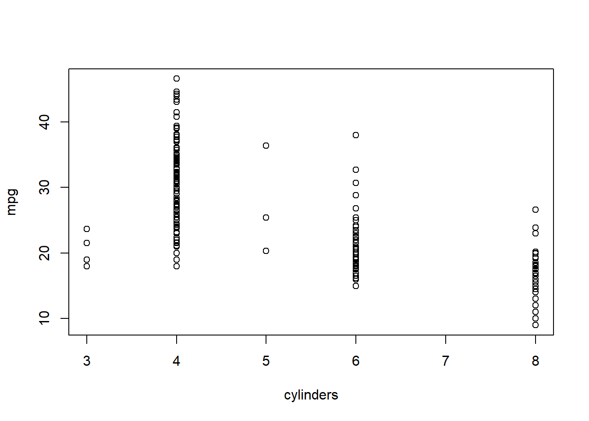
데이터프레임의 변수는 $ 기호를 이용하여 데이터프레임$변수 형태로 참조할 수 있다. attach()를 사용하면 변수명을 직접 사용할 수도 있지만, 이름 충돌이 생길 수 있으므로 실제 분석에서는 $ 또는 with() 사용을 권장한다.
plot(Auto$cylinders, Auto$mpg)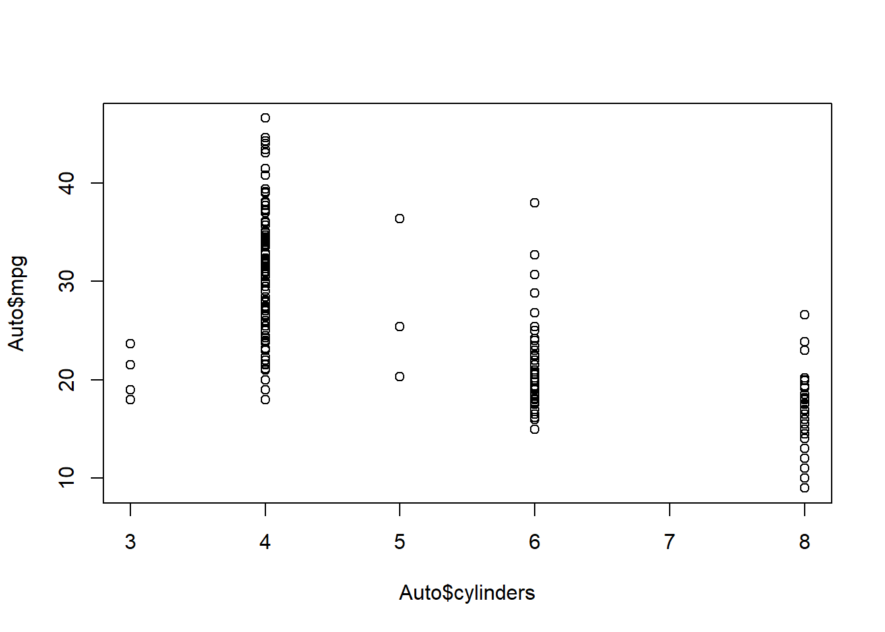
attach(Auto)
plot(cylinders, mpg)
cylinders는 숫자 벡터로 저장되어 있어 R이 양적 변수로 처리한다. 하지만 가능한 값의 수가 적으므로 범주형 변수로 취급하는 것이 적절할 수 있다. as.factor()는 양적 변수를 범주형 변수로 변환한다.
cylinders <- as.factor(cylinders)\(x\)축 변수가 범주형이면 plot() 함수는 자동으로 상자그림을 생성한다. 여러 옵션을 이용하여 그래프 형태를 조정할 수 있다.
plot(cylinders, mpg)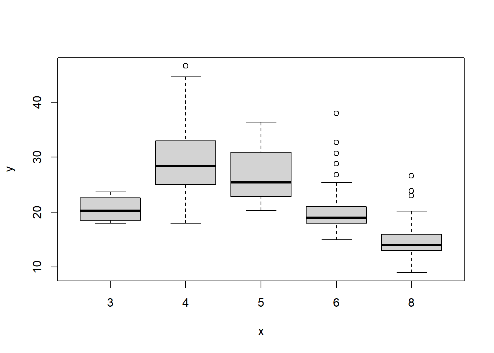
plot(cylinders, mpg, col = "red")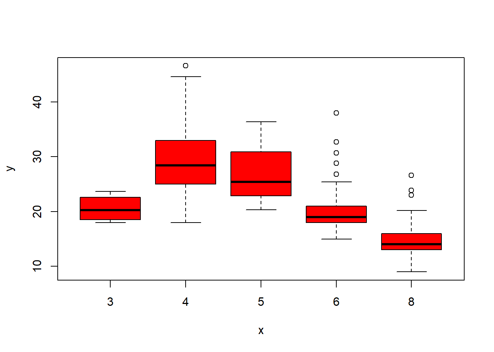
plot(cylinders, mpg, col = "red", varwidth = TRUE)plot(cylinders, mpg, col = "red", varwidth = TRUE,
horizontal = TRUE)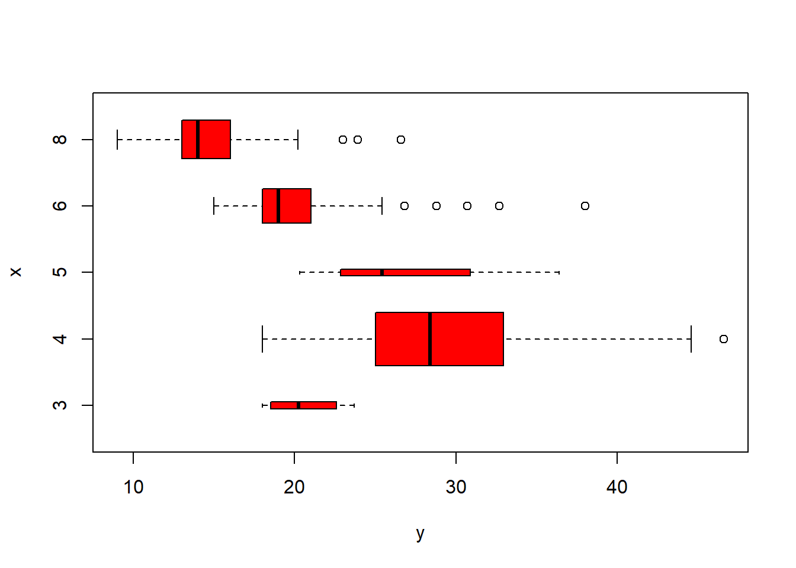
plot(cylinders, mpg, col = "red", varwidth = TRUE,
xlab = "실린더 수", ylab = "연비(MPG)")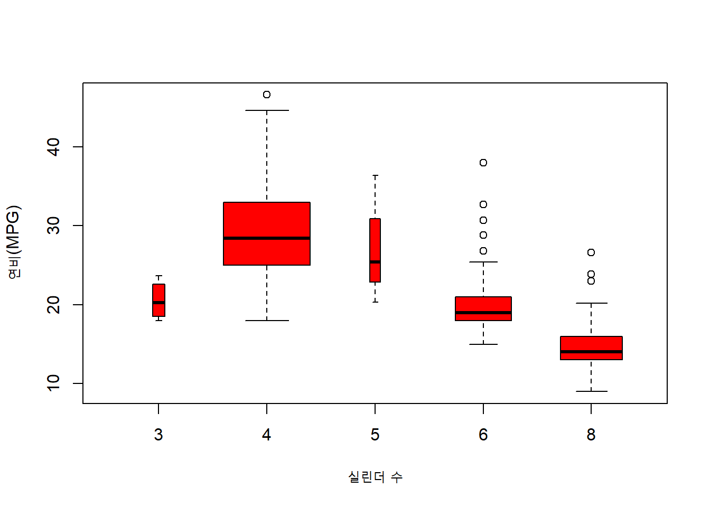
hist() 함수는 히스토그램을 그린다. col = 2는 col = "red"와 같은 효과를 낸다.
hist(mpg)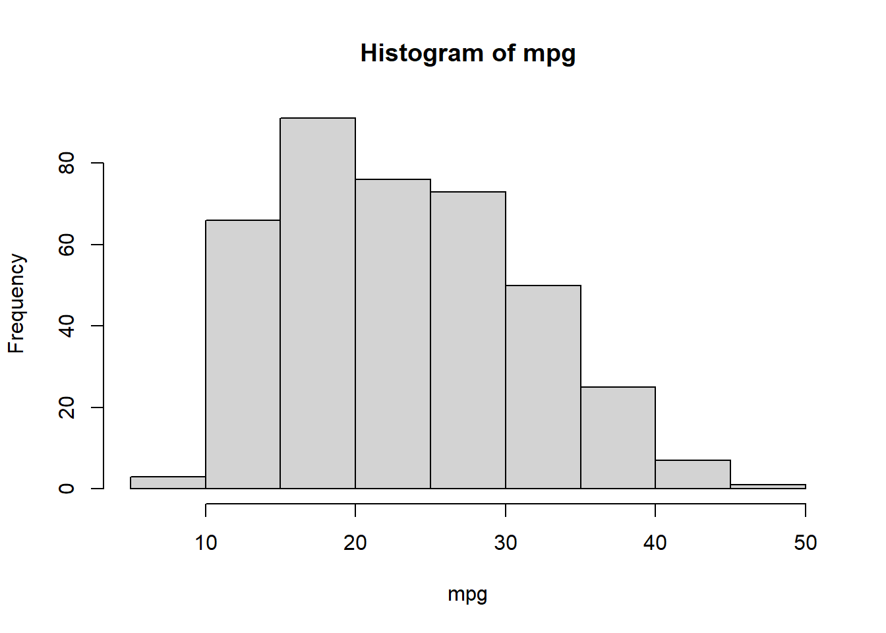
hist(mpg, col = 2)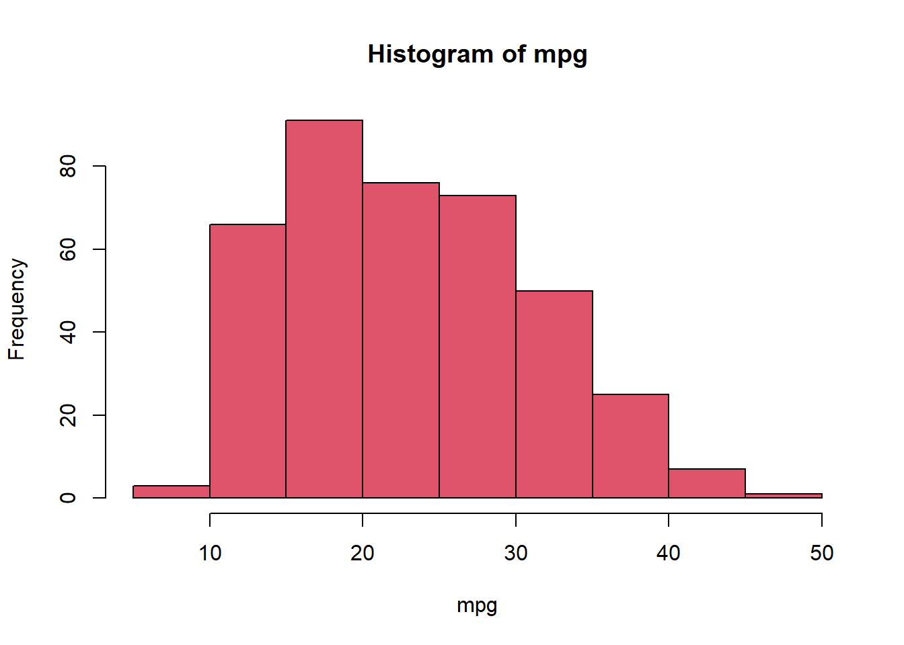
hist(mpg, col = 2, breaks = 15)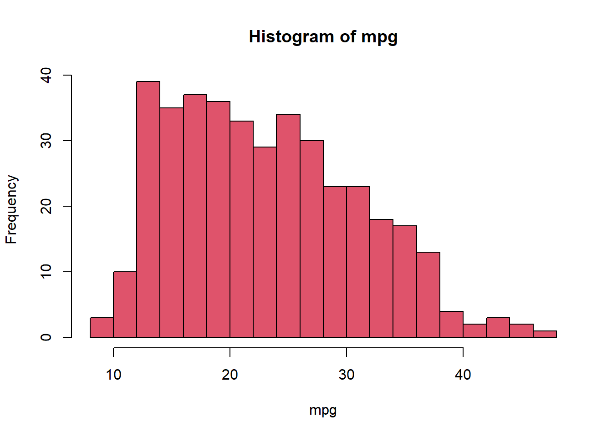
pairs() 함수는 모든 변수쌍에 대한 산점도를 한 화면에 배치한 산점도행렬을 만든다. 일부 변수만 선택하여 산점도행렬을 만들 수도 있다.
pairs(Auto)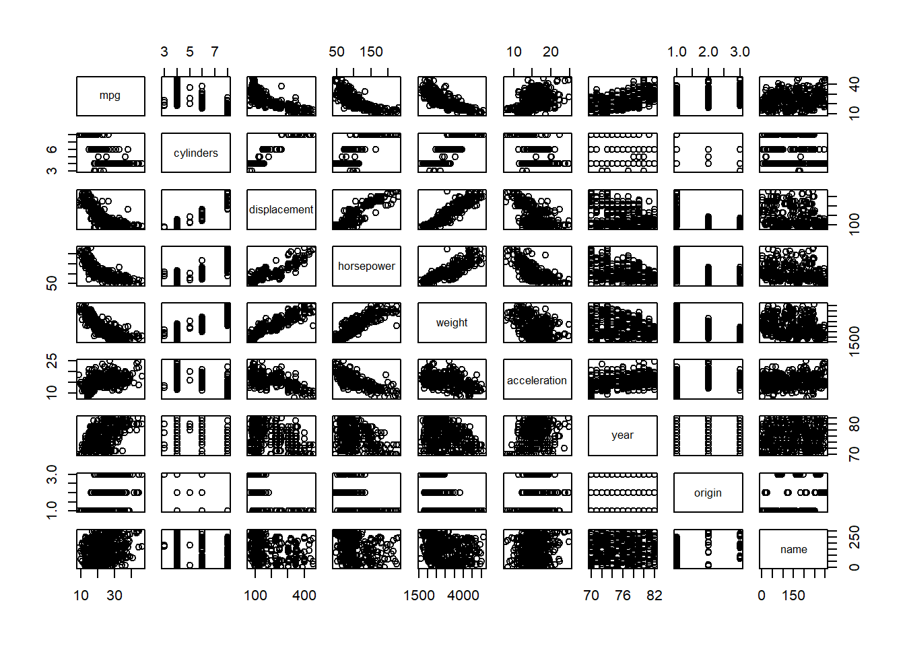
pairs(
~ mpg + displacement + horsepower + weight + acceleration,
data = Auto
)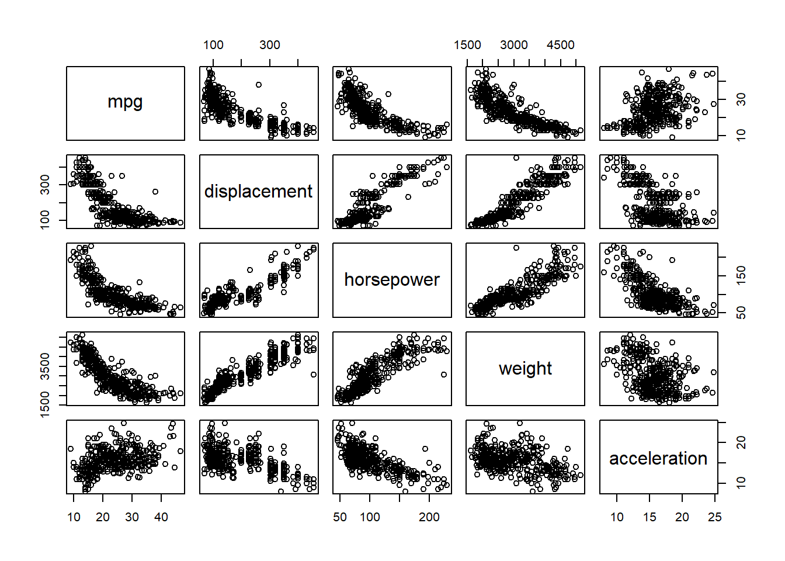
identify()는 그래프의 점을 마우스로 선택하여 해당 관측치의 값을 확인하는 대화형 함수이다. 렌더링 과정에서는 대화형 선택을 수행할 수 없으므로 다음 셀은 실행하지 않는다. R 콘솔에서 직접 실행하면 점을 선택한 뒤 Esc 키를 눌러 결과를 확인할 수 있다.
plot(horsepower, mpg)
identify(horsepower, mpg, name)summary() 함수는 데이터셋의 각 변수에 대한 수치 요약을 제공한다.
summary(Auto)#> mpg cylinders displacement horsepower weight
#> Min. : 9.00 Min. :3.000 Min. : 68.0 Min. : 46.0 Min. :1613
#> 1st Qu.:17.00 1st Qu.:4.000 1st Qu.:105.0 1st Qu.: 75.0 1st Qu.:2225
#> Median :22.75 Median :4.000 Median :151.0 Median : 93.5 Median :2804
#> Mean :23.45 Mean :5.472 Mean :194.4 Mean :104.5 Mean :2978
#> 3rd Qu.:29.00 3rd Qu.:8.000 3rd Qu.:275.8 3rd Qu.:126.0 3rd Qu.:3615
#> Max. :46.60 Max. :8.000 Max. :455.0 Max. :230.0 Max. :5140
#>
#> acceleration year origin name
#> Min. : 8.00 Min. :70.00 Min. :1.000 amc matador : 5
#> 1st Qu.:13.78 1st Qu.:73.00 1st Qu.:1.000 ford pinto : 5
#> Median :15.50 Median :76.00 Median :1.000 toyota corolla : 5
#> Mean :15.54 Mean :75.98 Mean :1.577 amc gremlin : 4
#> 3rd Qu.:17.02 3rd Qu.:79.00 3rd Qu.:2.000 amc hornet : 4
#> Max. :24.80 Max. :82.00 Max. :3.000 chevrolet chevette: 4
#> (Other) :365name과 같은 범주형 변수는 각 범주에 포함된 관측치 수를 보여준다. 한 변수만 선택하여 요약할 수도 있다.
summary(mpg)#> Min. 1st Qu. Median Mean 3rd Qu. Max.
#> 9.00 17.00 22.75 23.45 29.00 46.60attach()로 연결한 데이터프레임은 사용이 끝난 뒤 분리하는 것이 좋다.
detach(Auto)R을 종료하려면 q()를 입력한다. 종료할 때 현재 작업공간을 저장하면 이번 세션에서 만든 데이터셋과 객체를 다음 세션에서 다시 사용할 수 있다. 최근 세션에서 입력한 명령 기록은 savehistory()로 저장하고, 이후 loadhistory()로 불러올 수 있다.